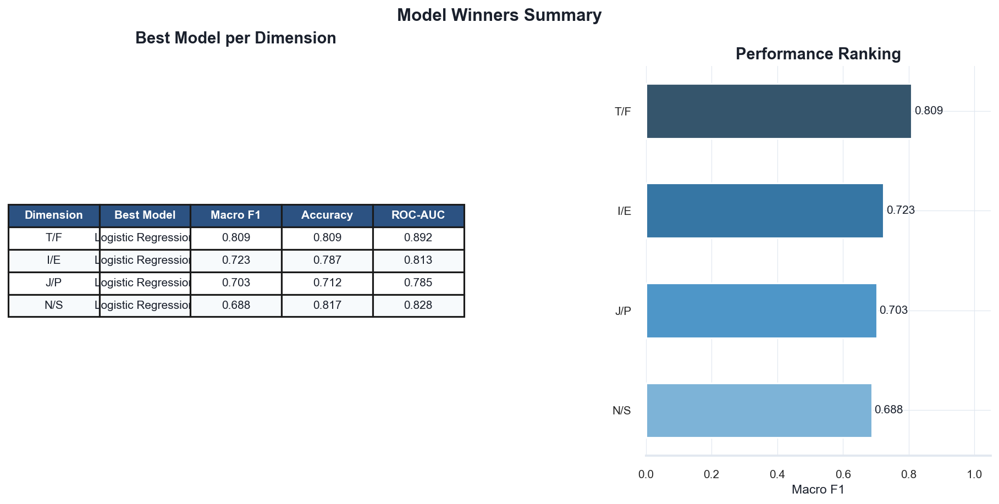
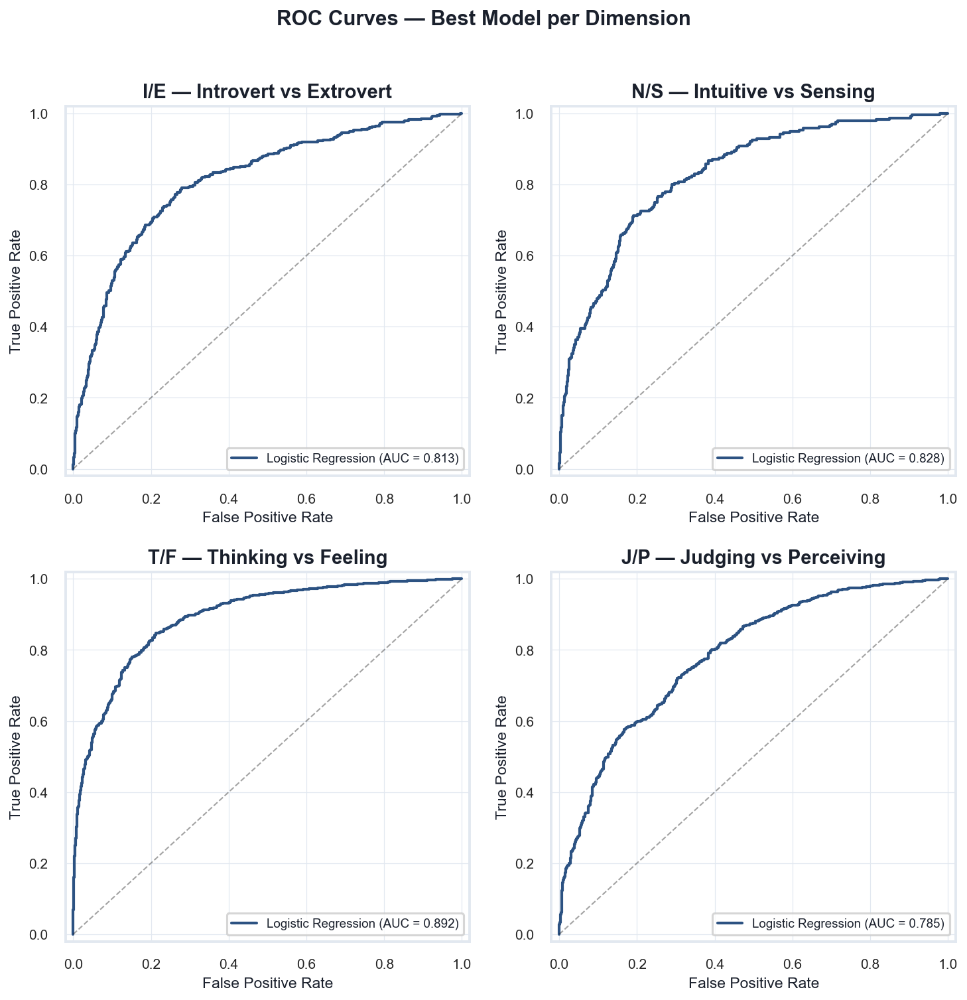

Feature Engineering
TF-IDF vectorization with 5,000 features, English stopword removal, stratified train/test split on MBTI type.
IE423 · NLP & Machine Learning
An NLP and machine learning exploration of personality through words.
Explore the Project ↓Every sentence leaves a trace.
Can machine learning detect personality through language alone?
We treat MBTI not as sixteen fixed types, but as four binary dimensions — Introversion/Extraversion, Intuition/Sensing, Thinking/Feeling, and Judging/Perceiving — each predicted independently from text.
Millions of words processed. Sixteen personality types. The main question — which linguistic signals persist?


TF-IDF vectorization with 5,000 features, English stopword removal, stratified train/test split on MBTI type.
Logistic Regression, Linear SVM, and Random Forest — each with balanced class weights for fair evaluation.
Macro F1 as primary metric, supplemented by accuracy, precision, recall, ROC-AUC, and confusion matrices.
Logistic Regression performed best across all four dimensions. The Thinking/Feeling axis was the most predictable from text.
Personality dimensions are not equally visible in language. Some leave clearer traces than others.




Thinking-oriented language leaned toward logic, systems, and analytical framing.
Feeling-oriented language emphasized emotional expression, relationships, and personal values.


Personality is more than text.
Language reveals patterns — not complete identities.
Our models capture statistical tendencies in written expression. They do not define who someone is — only what their words sometimes suggest.